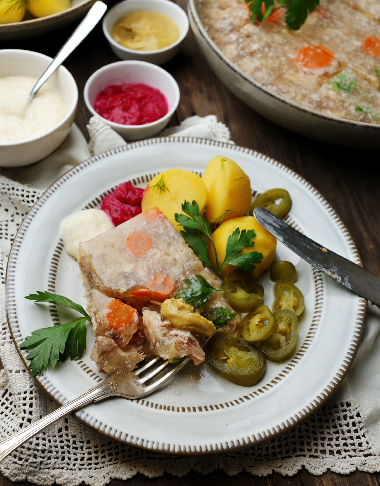

Студень и холодец — это одно и то же, хотя давно ведутся споры по поводу того, есть ли между ними какая-то разница. Для студня лучше брать голяшки, свиные ножки, специальные наборы или просто кости. Другой вариант — бычьи хвосты, богатые коллагеном. Если на костях изначально мало мяса, можно позже добавить его в бульон при варке. Чтобы получить насыщенный и ароматный бульон, кроме моркови, лука и сельдерея можно добавить корень петрушки, дополнительную головку чеснока, стебли зелени (петрушки, укропа), а листочки оставить для подачи. Поскольку обычно на приготовление студня уходит много времени, лучше начинать процесс за сутки до подачи. Ускорить его на несколько часов можно с помощью скороварки, но лишь в кастрюле он получится прозрачным. Если хотите украсить студень, морковь из бульона можно сохранить, нарезать кружочками и выложить на дно посуды, где будет застывать холодец, а также добавить половинки сваренных вкрутую перепелиных яиц или кружочки куриных, листочки зелени.